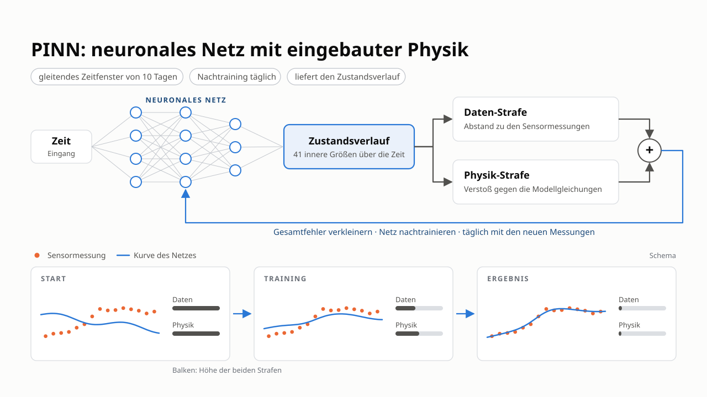

PINN v2 — the collocation trajectory PINN¶
This page explains the physics-informed neural network of the repository as it exists today: PINN v2, a trajectory network trained on the ADM1da residual at collocation points and run causally in a rolling window. The GRU observer (PINN B) has its own page.
In one sentence
The network is the state trajectory: \(\hat{x}(t) = \exp(\mu + \sigma\, z_\theta(t, u))\). It is trained to fit the sensor readings through the measurement model and to satisfy the ADM1da equations at freely chosen time points, with the known feed \(u\) as input.

PINN v2 at a glance (slide in German): the network maps time and feed to the 41-state trajectory; training minimises a data penalty (distance to the sensor readings) plus a physics penalty (violation of the model equations), and the network is retrained every day on a sliding 10-day window.
Sections 1–3 are the idea, section 4 the loss, section 5 the causal operation, section 6 what the structure study found, section 7 the implementation map.
1. The problem and the two routes¶
A digester has 41 ADM1da states; online we see five signals (gas flow, methane, CO₂, pH, total solids). The UKF solves this recursively with the ADM1da as its prediction model. A PINN takes the opposite route: it writes down the whole trajectory as a network and uses the physics as a soft constraint.
Two properties follow:
- Soft physics. The equations are a penalty, so the network can trade
model error against data fit. That is a strength when the model is wrong and a weakness when the data are too few to pin the state down. - Per-series fit. Nothing is learned across series. Whatever the network
knows about kinetics it must infer from the window it sees. The benchmark perturbs 26 kinetic constants per series (\(\sigma = 0.25\), lognormal), and a 5-sensor window cannot identify them. That is the ceiling of this approach, measured in section 6.
2. The network¶
TrajectoryNet (pinn/model.py) maps normalised time plus feed features
to the state:
- \(\mu, \sigma\) — per-state mean / std of \(\log x\) on the training split
(train_split_log_stats), so the output normalisation never sees the evaluated series' truth. The exponential keeps every state positive. - \(\tilde t\) — time scaled to the window, optionally expanded into \(K\)
deterministic Fourier pairs \((\sin 2\pi k \tilde t, \cos 2\pi k \tilde t)\) (ArchConfig.fourier_features). This is the one structural knob that measurably helped (section 6). - \(\phi(u, t)\) — the current feed, or the current feed plus daily / weekly
history means (feed_mode = "current" | "hist7" | "hist30"). - Body:
depthtanh layers ofwidthunits; options for layer norm, residual
blocks, the "modified MLP" and per-state output heads exist and were tested.
Closure. By default the network predicts the 31 core states only. The
six ion species follow from the acid–base equilibria and the charge balance
(solve_charge_balance, a Newton solve for \(S_{H^+}\)), the four gas pressures
from the quasi-steady headspace (close_state). Both closures are
differentiable, and the rates of the closed states come from a forward-mode
Jacobian-vector product (close_state_with_rates), so the residual below is
exact. The alternative "DAE mode" predicts all 41 states and adds the six
equilibrium residuals as algebraic rows.
3. The physics side¶
ADM1Physics (pinn/physics.py) evaluates the ADM1da right-hand side for a
batch of time points with different feeds. It shares the differentiable
core pyadm1.core.adm1_torch.adm1da_rhs_torch with the UKF's torch backend and
the GRU observer, so one tested implementation of the equations serves all
estimators.
InfluentModelturns the feed \(u\) [m³/d per substrate] into \((q_{ad}, s_{in})\)
with plain array algebra. Its"nominal_mix"mode reproduces how the benchmark truth was generated (composition from the nominal mix, total flow from the feed);"blend"is the physically correct flow-weighted blend for plants whose composition really varies.build_paramssnapshots the plant's parameters, optionally with the series'
true kinetic factors (for verification only — a field PINN has the nominal model).- The residual rows are the core states except the fast dissolved gases
\(S_{h2}, S_{ch4}\); the rows of \(S_{co2}\) and \(S_{nh4}\) are formed as the conserved sums \(S_{co2}+S_{hco3}\) and \(S_{nh4}+S_{nh3}\), which removes the stiff acid–base rates exactly (acid_base = "sum").
trajectory_residual verifies the physics against the simulator: the residual
of the benchmark truth with the true parameters is at the finite-difference
error level (tested in tests/test_pinn_physics.py).
4. The loss¶
For a window \([0, t_{obs}]\) with sensor readings \(y_k\) at hours \(t_k\) and collocation points \(\tau_m\) (random in \([0, t_{obs} + \text{horizon}]\)):
- \(h\) is the differentiable measurement model (
MeasurementModel: gas flows
from the quasi-steady headspace, pH from the charge balance, TS from the particulates), \(\sigma_y\) the dataset's sensor noise. - \(\dot{\hat x}\) is the exact time derivative of the network (autograd).
- \(\sigma_r\) is a per-row residual scale fitted on training data
(fit_scale), either the typical size of the net rate ("rate") or a Jacobian-based scale ("jacobian", the default for the PINN). Without it the stiff rows dominate and the slow, informative rows are ignored. - \(\lambda\) ramps up linearly over the first 20 % of the steps
(lambda_warmup_frac); Adam with cosine decay, optional L-BFGS polish.
Variants studied and kept as options in TrainConfig: training on the true
states instead of measurements (data_source), an initial-condition prior from
the plant warm-up (ic_prior), causal collocation weighting (causal_eps),
time marching, an inverse-PINN mode that learns the kinetic factors
(estimate_kinetics) and an additive learned correction of the physics residual
(option greybox, RateCorrection in pinn/train.py).
5. Causal operation: the rolling window¶
A trajectory network is a smoother: it sees the whole window. In operation it
cannot see the future, so pinn/rolling.py runs it causally: every
cadence_hours (24 h) the network is retrained on the last window_days of
measurements, warm-started from the previous weights (steps_warm = 200
instead of 3000 from scratch). The study's best window is 10 days, which is
what the registry uses; longer windows and more frequent retraining do not
help. Between two retrainings the estimate at the current hour is bridged,
either by holding the last value ("hold") or by integrating the nominal
ADM1da forward from it with the known feed ("adm1"). Holding is 0.8 points
better, because the nominal kinetics drift away from the true state within a
day. The same chain also yields fixed-lag estimates (the value a later
retraining assigns to an earlier hour, keys "lag1" and "lag3"), which are
slightly more accurate but one or three days late.
Cost: one 60-day series takes tens of minutes on a CPU, which is why the UKF remains the operational estimator and the PINN a study object.
6. What the structure study found¶
Twenty test series, 60 days, benchmark metric (median-over-states NRMSE).
Details and statistics are in the architecture report
(PyADM1ODE_estimate_local/experiments/pinn_architecture_study). The structure
study fits one network per series to the whole 60-day measurement record
(offline) and scores all 60 days; the causal study scores from day 3 on,
because the rolling PINN runs on the prior mean for its first days.
| Setting | UKF | PINN v2 |
|---|---|---|
| offline, best structure (depth 4, width 128, tanh, 4 Fourier pairs), 60 d | 15.1 % | 18.3 % |
| offline, range over all tested structures, 60 d | 15.1 % | 18.3 – 24.4 % |
| causal, 10-day window, daily retraining, hold, from day 3 | 14.2 % | 18.6 % |
| causal, same chain with one day lag, from day 3 | 14.2 % | 18.3 % |
- The only lever that helps is the Fourier time encoding (main effect about
−1 point). Depth, width, activation, layer norm, residual blocks, feed history, per-state heads: inside the seed noise. - The offline gap to the UKF (3.3 points, \(p = 0.064\)) is a
model-error / identifiability gap, not a capacity gap: the network cannot learn the series' kinetics from five sensors, and the soft physics lets it drift where the data do not pin it. Run causally, every scheme stays significantly behind the UKF (\(p \le 0.005\)). - Fusing the PINN into the UKF as a pseudo-measurement or with a fixed gate
(blocks F1–F4) gains about one point, not significant.
The binding constraint is therefore the kinetic model error, not the network.
7. Implementation map¶
| Module | Contents |
|---|---|
pinn/data.py |
BenchmarkSeries (built from the shared Series of filter_tuning.datasets.load_benchmark), feed lookup and history features, training-split priors |
pinn/influent.py |
InfluentModel: feed → \((q_{ad}, s_{in})\), batched |
pinn/physics.py |
ADM1Physics, closures, PhysicsConfig, trajectory_residual, build_params |
pinn/measure.py |
MeasurementModel, SensorNoise from meta.json |
pinn/model.py |
TrajectoryNet, ArchConfig |
pinn/train.py |
TrainConfig, train_trajectory, metrics and report formatting |
pinn/rolling.py |
RollingConfig, run_rolling, ADM1 bridging |
pinn/kinetics.py |
learnable kinetic factors (inverse PINN) |
estimators.py |
"pinn" in the estimator registry: PinnEstimator.run(series) |
Experiments: experiments/pinn_v2/ (architecture sweep, rolling sweep, fusion
rules, lag report).
References¶
- Raissi, M., Perdikaris, P. & Karniadakis, G. E. (2019). Physics-informed
neural networks. Journal of Computational Physics 378:686–707. - Wang, S., Sankaran, S. & Perdikaris, P. (2022). Respecting causality is all
you need for training physics-informed neural networks. arXiv:2203.07404. - ADM1da model and state indices: ADM1da model.
API reference¶
pyadm1ode_estimation.estimation.pinn.physics.ADM1Physics(params, influent, config=None)
¶
Physics residual of the ADM1da for a PINN.
Parameters:
| Name | Type | Description | Default |
|---|---|---|---|
params
|
Adm1TorchParams
|
Parameter snapshot (see :func: |
required |
influent
|
InfluentModel
|
Feed -> influent map (see :class: |
required |
config
|
PhysicsConfig | None
|
Residual configuration. |
None
|
All tensor inputs are batched along the leading dimensions; x and
dxdt are (..., 31) with closure or (..., 41) without.
Attributes¶
n_residual
property
¶
Columns returned by :meth:residual: ODE rows + algebraic rows.
Methods:¶
fit_scale(states, feed, *, mode='jacobian', n_jacobian=64, chunk=4096, floor=1e-12)
¶
Set the per-row residual scale sigma_i from reference data.
states (N, 41|31) / feed (N, n_sub) are the truth of the observed
window. Two modes:
"rate"
sigma_i = RMS(f_i), the net rate. Right for a network that already
sits on the slow manifold, but for rows whose net rate is a small
difference of large gross terms (gas rows, S_h2, S_ch4) a network
that is a few percent off produces residuals of 1e6-1e11 times the
net rate, and the physics loss then ignores everything else.
"jacobian" (default)
sigma_i = sqrt(RMS(f_i)^2 + RMS_t(sum_j (J_ij s_j)^2)) with the
RHS Jacobian J = df/dx at n_jacobian reference points and the
per-state variation s_j = std(x_j) over the window. The second
term is the rate error a typical-variation-sized state error
causes in row i, so r_i / sigma_i ~ 1 means "as wrong as a
state that is off by its own spread" in fast and slow rows alike.
full_state(x)
¶
(..., 41) state: closure applied when configured, else x itself.
full_state_with_rates(x, dxdt)
¶
(x_full, dx_full/dt); the closed rows' rates come from forward-mode AD.
model_rates(x_full, feed)
¶
Effective f_i per configured row, (..., n_ode).
residual(x, dxdt, feed, scaled=True)
¶
Physics residual (..., n_ode [+ 6]).
Columns 0 .. n_ode-1: r_i = dx_i/dt - f_i(x, u) on the configured
rows (scaled by sigma_i when set). In DAE mode with
ion_equilibrium the six dimensionless equilibrium residuals follow.
dxdt is the time derivative of the network output x (same shape).
rhs(x_full, feed)
¶
Raw f(x, u), all 41 rows, for the full state and feed (..., n_sub).
state_rates(dx_full)
¶
Effective dx_i/dt per configured row, (..., n_ode).
pyadm1ode_estimation.estimation.pinn.model.TrajectoryNet(arch, n_out, n_feed, t_scale, feed_scale, log_mu, log_sigma, seed=0)
¶
Bases: Module
(t, feed features) -> x with a positive output transform.
Parameters:
| Name | Type | Description | Default |
|---|---|---|---|
arch
|
ArchConfig
|
Architecture. |
required |
n_out
|
int
|
Number of state outputs (31 in closure mode, 41 in DAE mode). |
required |
n_feed
|
int
|
Number of feed feature columns (see :func: |
required |
t_scale
|
float
|
Time normalisation |
required |
feed_scale
|
ndarray
|
|
required |
log_mu, log_sigma
|
|
required |
Methods:¶
forward(t, u)
¶
States (B, n_out) for t (B, 1) and feed features u (B, n_feed).
latent(t, u)
¶
Normalised state z (the network's own output space).
to_latent(x)
¶
Inverse of the output transform (for state targets and priors).
with_rates(t, u)
¶
(x, dx/dt) by forward-mode AD over t (u is piecewise constant in t).
pyadm1ode_estimation.estimation.pinn.rolling.run_rolling(series, arch, cfg, roll, *, meta=None, prior_stats=None, scale_ref=None, verbose=False)
¶
Run one causal scheme on one series and score all derived trajectories.